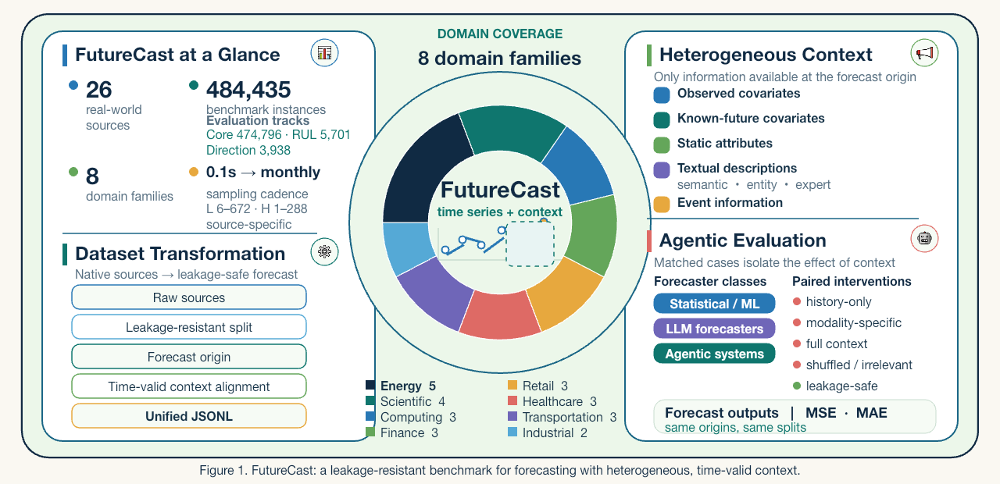

Continuous numerical forecasting across 24 sources with source-specific lookback and prediction windows.
01 · Benchmark overview
Forecasting with the information that shapes the future
FutureCast evaluates whether LLM-based and agentic forecasting systems can integrate target histories with heterogeneous information available at the forecast origin. Every case uses a unified JSONL representation and a leakage-safe information boundary.

C-MAPSS evaluates remaining-useful-life regression from multivariate engine sensor histories.
FI2010LOB evaluates discrete market-direction prediction and is reported separately from MSE/MAE forecasting.
02 · Multi-domain coverage
Twenty-six sources across eight temporal environments
The benchmark spans substantially different entities, units, frequencies, horizons, missingness patterns, and temporal mechanisms. This breadth tests whether forecasting systems generalize beyond a single application setting.
Energy
5 sources
AEMO, Liander, OPSD, SDWPF, and iFLYTEK
Scientific
4 sources
AQData, Basin Streamflow, Jena Climate, and MEG03
Computing
3 sources
Alibaba Cluster, MSDS, and TelecomTS
Finance
3 sources
FI2010LOB, FNSPID100, and FRED-MD
Retail
3 sources
Favorita, M5, and Rossmann
Healthcare
3 sources
MIMIC-III, PhysioNet 2012, and VitalDB
Transportation
3 sources
NYC-TLC, PEMS04, and PEMS07
Industrial
2 sources
C-MAPSS and Stanford Nova
03 · Heterogeneous context
Context is typed by meaning and availability
FutureCast does not treat context as a single auxiliary block. It separates five information families so their individual and joint contributions can be evaluated under matched forecasting cases.
Observed covariates
Auxiliary numerical variables observed no later than the forecast origin.
Known-future covariates
Inputs legitimately known over the prediction window, such as calendars or schedules.
Static attributes
Time-invariant information describing the entity, system, or location.
Textual descriptions
Dataset, variable, entity, task, and domain-knowledge descriptions.
Event information
Time-stamped events that may influence future evolution of the target.
Forecast-time boundary. Context is exposed only when it is available at the forecast origin or legitimately known over the prediction horizon. Target-equivalent language is removed before evaluation to prevent semantic leakage.
04 · Unified evaluation
One target, controlled views of context
All systems share the same forecast origin, history, horizon, and hidden target. Matched interventions change only the contextual information, isolating what an LLM or agent gains—or loses—from context.
1
Transform heterogeneous sources
Source-specific converters preserve units, entities, sampling structure, missingness, and task semantics.
2
Apply leakage-resistant splits
Chronological, official, or entity-disjoint partitions are created before forecasting windows.
3
Align time-valid context
Information is matched by entity, timestamp, semantic role, and forecast-time availability.
4
Intervene on context
Numerical-only, basic, full-safe, single-family, shuffled, irrelevant, and leakage-audit conditions reuse the same case.
05 · Empirical findings
Context helps, but only when it is relevant and calibrated
The controlled analyses use identical numerical histories and vary only textual information. The results support contextual forecasting while exposing important limitations of unconditional context concatenation.
Context value
More complete context yields a larger point-estimate gain
Basic task context reduces paired relative MAE by 12.55%, while full leakage-filtered context reaches 25.69% relative to numerical-only forecasting.
Context type
Temporal and domain cues are the strongest individual signals
Event/temporal information and domain descriptions obtain the best mean MAE ranks (2.817 and 2.822), although no universal ordering is established.
Forecast structure
Context contributes most with short histories and near-term horizons
Full context reduces MAE by 50.1% for histories of at most 48 observations and by 45.9% for horizons of at most 12 observations.
Robustness
Irrelevant or leaked context can produce misleading behavior
Cross-source irrelevant text increases MAE by 9.19%. Unsanitized target-equivalent text creates an invalid apparent improvement of 19.44%.
Heterogeneity
The context effect can reverse across data sources
Full context improves one transportation source by 90.6% but degrades another by 37.4%, motivating context routing and gating.
Prompt length
More tokens do not imply better forecasts
Performance varies non-monotonically across context-length quartiles. Relevance, temporal validity, and task alignment matter more than prompt length alone.
06 · Open benchmark
Build and evaluate contextual forecasters
The repository hosts the open FutureCast toolkit and release documentation. Processed data, benchmark adapters, and evaluation assets will be versioned as the public release is completed.
Repository
The current code release provides a lightweight installation, loader/validator components, tests, and a toy data-processing workflow.
- Unified benchmark documentation
- Dataset validation utilities
- Reproducible sample workflow
- Baseline and evaluation release tracking
Citation
Please cite FutureCast when using the benchmark, its contextual schema, or its evaluation protocol.
@misc{wang2026futurecast,
title = {FutureCast: A Multi-Domain Benchmark for Contextual
Time Series Forecasting with Large Language Models},
author = {Wang, Jiahao and Cheng, Mingyue and Tao, Xiaoyu and
Zhang, Shilong and Liu, Qi},
year = {2026},
url = {https://github.com/ustc-time-series/Future-Cast}
}